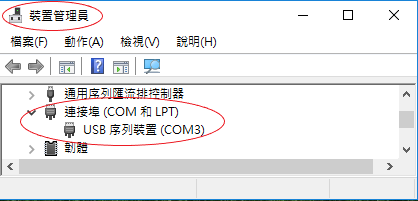
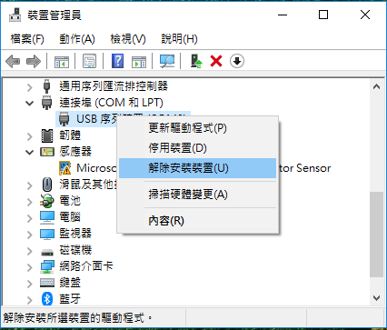
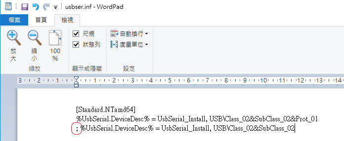
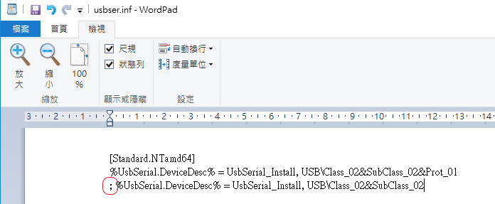
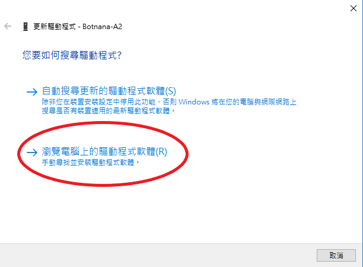
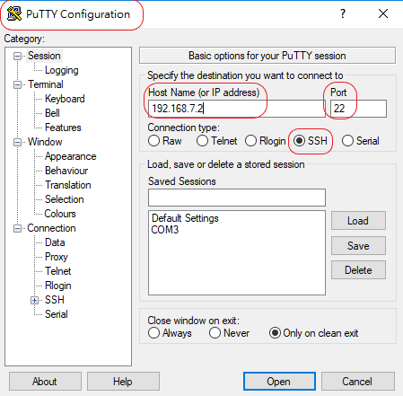

WINDOWS 10 透過 MicroUSB 與 Botnana A2 連線時需先安裝 RNDIS 驅動程式
0. 將 Botnana-A2 microUSB埠 與 電腦 連接。
註解︰若已嘗試過安裝 RNDIS 驅動程式，請從步驟 1 開始；否則，請直接從步驟 3 開始。
1. 裝置管理員 出現如下裝置

2. 解除安裝裝置

3. 修改 C:\Windows\INF\usbser.inf （關於 usbser.inf 權限問題）
將底下這個
 改成如下

改成如下

4. 選裝置管理員中的 Botnana-A2，並更新驅動程式

5. 選 瀏覽電腦上的驅動程式軟體

6. 選 讓我從電腦上的可用驅動程式清單中挑選

7. 硬體類型選 網路介面卡

8. 製造商 / 型號︰Microsoft / USB RNDIS介面卡

9. 忽略警告訊息

10. 驅動程式更新成功

11. 檢查是否出現這個裝置︰裝置管理員/網路介面卡/USB RNDIS介面卡

12. 連線測試（假設用 PuTTY 連線軟體）

13. username / password: debian / temppwd